Практичні курси · журнал «ДентАрт» 2023 №2
Біоестетична оцінка і реконструкція: інструменти, правила, етапи і методи
Bioesthetic evaluation and reconstruction: tools, rules, stages and methods
Біоестетична оцінка — найпотужніший і основний інструмент у процедурі СОАП — суб'єктивного та об'єктивного аналізу і планування. Історія хвороби пацієнта, його побажання, а також особисті обмеження виступають як суб'єктивний аспект у кожному конкретному випадку. Це має братися до уваги при розробці плану, що базується на об'єктивних дослідженнях.
Біоестетичний аналіз включає всі моменти, потрібні для об'єктивного обстеження, при цьому аналізуються всі отримані дані шляхом порівняння їх з науковими знаннями і правилами, що прояснює необхідні зміни та поліпшення, після чого розробляється план лікування зі специфічним вибором матеріалів і методів, а також оцінкою можливих складнощів і прогнозу. Цей метод застосовується як при невеликих поодиноких випадках, так і у випадках комплексної реконструкції.
Нарешті, ця методика корисна і точна на всіх етапах впровадження плану лікування в клінічну реальність: від воскового моделювання (воксапу), аналізу попередньої реставрації (мокапу), тимчасових конструкцій, примірок попередньої неглазурованої кераміки — до кінцевого аналізу, встановлення часткових і повних знімних протезів та огляду ортодонтичного лікування.
Біоестетична оцінка дозволяє отримати детальну інформацію на кожному наступному етапі. Вона іде за так званим «планом лікування за лицьовими ознаками».
- Естетика: аналіз обличчя; положення центральних різців та ікол; естетична площина оклюзії; форма зубів, їх пропорції і осі; морфологія ясен.
- Функція: ширина дуг; передня напрямна, перекриття; форма і оклюзія; м'язи; скронево-нижньощелепний суглоб.
- Структура: тверді тканини; методи відновлення; матеріал для реконструкції; вартість.
- Біологія: ендо; періо; системні чинники.
Таким чином можна отримати безпечну передбачувану процедуру і надійний інструмент для спілкування з пацієнтами, що спрощує юридичні аспекти. Але будьте обережні: практична стоматологія залишає нас у системі ймовірності. Тому на відміну від точної певної системи завжди є ризик несприятливого результату. Усі цілі планування спрямовані на зниження цих ризиків до мінімуму. Кожен аспект результатів СОАП документується в бланку і збирається на одному аркуші.
Естетика
Аналіз обличчя
Цей аналіз ґрунтується на фотографічній документації, яка включає знімки анфас, косі знімки, знімки в профіль і різні точні положення нижньої щелепи і мімічних м'язів. Усі ракурси поля зору і налаштування камери повинні бути заздалегідь визначені і будуть з точністю повторюватися. У цьому аналізі використовуються правила ортодонтичних і естетичних наук.
Аналіз обличчя — профіль. Профіль губ: при звичайному обличчі тангенціальна лінія від Sn до Pog повинна поділяти верхню губу навпіл, торкатися до нижньої губи і створювати кут 10 градусів до носової вертикалі. Середнє пряме обличчя: точка Sn лежить на прямій Pn. На відміну від цього, обличчя може бути переднього типу (точка Sn наперед від лінії Pn), заднього типу (точка Sn позаду від лінії Pn), нахиленим назад (точка Sn наперед від лінії Pn, Pog далеко назад) або наперед (точка Sn наперед від лінії Pn). Крива, що з'єднує точки N–Sn–Pog, може бути прямою, опуклою або увігнутою. Уступи губ: позитивне положення — злегка негативне положення (норма) — негативне положення. Носогубний кут: в ідеалі 90-110 градусів.
- Gn = gnathion, точка, що відповідає нижньому краю підборіддя
- H = frankfurt horizontal, франкфуртська горизонтальна площина
- Ls = labrale superius, точка верхньої губи, яка найбільше виступає вперед
- Li = labrale inferius, точка між межею червоної облямівки нижньої губи та шкіри, яка перетинається в серединній сагітальній площині
- N = nasion, точка, що відповідає місцю переходу носової кістки в лобову кістку
- Or = orbitale, орбітальна точка, що відповідає середині нижньоочного краю
- P = porion, точка, що відповідає верхівці суглобової головки наперед від зовнішнього слухового отвору
- Pn = perpendiculare nasale, носова вертикаль, або носова площина
- Pog = pogonion, точка підборіддя, яка найбільше виступає вперед
- Po = perpendicular orbitale, орбітальна вертикаль, або орбітальна площина
- Sn = subnasion, найбільш глибока точка переходу основи носа у верхню губу
- Sto = stomion, точка, розташована у місці контакту червоної облямівки верхньої та нижньої губ, на профілі губ
- T = tangent, дотична до шкірних точок Sn (subnasale) і Pog (pogonion)
Аналіз обличчя — анфас. Права і ліва половини обличчя повинні бути значною мірою симетричні, але ідеальної симетрії немає, і вона може змінюватися при мімічних рухах. Усі ці способи оцінки обличчя — не строгі правила, які повинні іти одне за одним, вони швидше орієнтовна частина мозаїки, яка формує тільки частину естетичного результату — з естетикою, видимою лише очима очевидця. Незалежно від того, що ми вважаємо красивим, на цьому етапі оцінки потрібно прийняти одне важливе рішення, від якого залежатиме план лікування: чи буде це лікування, засноване тільки на протезуванні та реставраційних технологіях, чи все ж таки буде потрібна додаткова детальна ортодонтична або навіть хірургічна консультація і міждисциплінарна кооперація для задоволення вимог пацієнта.
Вертикальні розміри середнього обличчя можуть розглядатися як розподілені на третини. Нижня третина обличчя у свою чергу також розподіляється приблизно на три частини. Контрольні лінії: при середньому обличчі зінична лінія і лінія, що з'єднує кутики рота, не завжди розміщені під прямими кутами до медіальної сагітальної лінії.
Положення ріжучих країв верхніх передніх зубів
Ще один момент, який повинен бути проаналізований, — це положення ріжучих країв верхніх передніх зубів. При оцінці їх положення основними моментами є визначення оклюзійної площини, контуру ясен і підлеглої кістки. Можливо, необхідне визначення вимог для положення імплантата і необхідності аугментації тканин або методів відновлення зубів і м'яких тканин. Таким чином, оцінюється фото і відео у стані спокою, з легкою або широкою усмішкою з різних кутів і полів зору. Більш ніж очевидно, що потрібні детальні правила для якіснішої оцінки цього аспекту в чотиривимірному підході: краніо-каудальна, сагітальна і трансверзальна позиції з динамічною оцінкою в різних фонетичних і мімічних положеннях.
По вертикалі. Ідеальне положення ріжучого краю — видимі від 0 до 3 мм з-під розслабленої губи. Залежно від віку це значення знижується. Можна використовувати лінійку для того, щоб показати, наскільки глибоко заховані зуби або протези. При повній усмішці ріжучі краї повинні торкатися червоної облямівки нижньої губи на 75-100 % її поверхні.
По сагіталі. Положення ріжучого краю співвідноситься з профілем обличчя.
По трансверзалі. Серединна лінія різців повинна збігатися із середньою лінією обличчя.
Динаміка — міміка. Відстань піднімання губи з оголенням зубів і ясен при спонтанному сміху.
Фонетика. При вимовлянні звуку «і» верхня губа піднімається у свою найбільш верхню позицію. Повинні з'явитися вершини здорових сосочків і практично вся вестибулярна поверхня зубів. Також потрібно враховувати індивідуальні особливості. При вимові звуку «ф» нижня губа комфортно розташовується, торкаючись ріжучих країв. Нахил у сагітальній площині вимірюється відносно цефалометричних ознак. Певне положення ріжучих країв верхніх передніх зубів є контрольною точкою для вертикальної позиції ЕПО (естетичної площини оклюзії).
Положення горбиків верхніх ікол
Після визначення положення різців слід визначити позицію ікол. Положення по трансверзалі: горбики ікол розташовуються вертикально під медіальними кутами очей.
Вертикальна позиція. Дж. Коїс / J. Kois: горбики ікол мають розташовуватися на лінії змикання розслаблених губ, трохи вище або трохи нижче. При широкій усмішці вони повинні торкатися нижньої губи або розташовуватися на невеликій відстані від неї. Дискусія про положення горбиків ікол постійно відкрита, а тим більше про лінію, яка їх з'єднує: чи повинна вона бути паралельна зіничній лінії? Чи вона має розділяти кут між зіничною і горизонтальною лінією на два рівних кути? Чи можна визначити це довільно? Наше рішення полягає в розташуванні лінії, що з'єднує горбики ікол, горизонтально при правильному вертикальному положенні голови пацієнта. Неважливо, чи буде вона паралельна лінії, що з'єднує кутики рота, або зіничній лінії. Для перевірки можна використовувати лінійку з рівнем.
Виконання цих процедур дає можливість визначити один дуже важливий аспект: статичний і динамічний аналіз фотографій, сканів обличчя та відеозаписів, виконаний при клінічному обстеженні, має основоположне значення для подальшого позиціонування ріжучих країв. Але все одно, результат цього репозиціонування не може бути передбачений з достатнім ступенем достовірності. Чому? Ми працюємо з біологічною і, що важливо, сенсомоторною системою. Тому будь-яка зміна в морфології положення зубів веде до змін у чутливості, а також у мімічних і фонетичних рухах. Ці зміни відбуваються негайно, але тривають з плином часу. Які ж клінічні висновки можна зробити, виходячи з цих спостережень? Нам потрібно не лише ідеально спланувати майбутнє положення ріжучих країв, а й дати біологічній системі час для адаптації до нової морфології шляхом використання попереднього моделювання — мокапу і тривалого застосування тимчасових конструкцій, які з точністю повторюють форму майбутньої реконструкції, аналізуючи при цьому біоестетичну оцінку на кожному з етапів.
ЕПО — естетична площина оклюзії
Лінія визначається двома точками, площина визначається трьома точками або двома лініями, що перетинаються. Лінія, що з'єднує горбики ікол, визначає трансверзальну вісь естетичної площини оклюзії. Сагітальна вісь ЕПО повинна бути горизонтальною лінією при положенні пацієнта сидячи або стоячи рівно, з поглядом, спрямованим горизонтально. При визначенні положення ріжучих країв центральних різців фіксується вертикальна позиція естетичної площини оклюзії. Установку цоколя моделі верхньої щелепи роблять, дотримуючись цих правил.
Форма зубів, їх пропорції і осі
Верхні центральні різці. Нашою метою є завершення лікування з формою зубів, заданою генетично, а в деяких випадках — поліпшеною, беручи до уваги побажання пацієнта про ідеальний зовнішній вигляд і ґрунтуючись на можливих вікових змінах. Ми хочемо запобігти повторній стертості в реконструкції. Розмір зубів більшою мірою визначений генетично і має індивідуальну різноманітність.
Довжина верхніх центральних різців, верхніх і нижніх ікол варіюється від 10 до 12 мм, нижні центральні різці повинні бути приблизно 10 мм. Співвідношення довжини і ширини центрального різця в ідеалі — 100:75-80. При коефіцієнті пропорційності вище 85 % або нижче 65 % сприймається неестетично. Контур зуба може мати різну форму в залежності від обрисів голови пацієнта.
Існують техніки створення оптичних ілюзій для того, щоб приховати справжній розмір зубів шляхом модифікування кривизни. Вирівнювання кривизни призводить до того, що великий зуб здається меншим, а її викривлення, навпаки, робить маленький зуб більшим. Ну і звичайно, з близької відстані можна побачити більше естетичних аспектів окремо взятого зуба. Створення складної текстури поверхні і відтворення внутрішніх оптичних властивостей натурального зуба — це свого роду наука і мистецтво.
Співвідношення ширини центральних різців і латеральних. Статистичні дослідження засвідчили цілком певні співвідношення між центральними і латеральними різцями. Статистично доведено, що існує гендерний диморфізм: латеральні різці жінок пряміші, ніж центральні, у порівнянні з такими у чоловіків. Навіть якщо існує кореляція між характером людини і морфологією зубів, це не є предметом обговорення у даному випадку. Деякі дослідження встановили зв'язок між співвідношеннями ширини центральних і латеральних різців і співвідношенням ширини перенісся і основи носа. Сходинки між ріжучими краями центральних і латеральних різців можуть бути пов'язані з ангуляцією перенісся.
Амбразури, міжзубні проміжки, контакти і осі. Амбразури між іклами і боковими зубами повинні мати приблизно прямий кут. Довжина премолярів від інтерпроксимального контакту зменшується в дистальному напрямку. Добре змодельовані амбразури — закруглені трикутні простори, що розділяють ріжучі краї, дозволяють отримати природний зовнішній вигляд. Контактні пункти, в яких зеніти інтерпроксимальних кривих візуально поєднуються, формують висхідні щаблі від центру до латералі. Ангуляція вісей передніх зубів сходиться до серединної лінії коронарно. Ікла і бокові зуби повинні бути рівними, а їхні осі злегка сходитись до серединної лінії.
Морфологія ясен
Положення ріжучих країв і форма зубів визначають контур краю ясен. Зеніт контуру ясен на латеральних різцях міститься на поздовжній осі зуба, у той час як на центральних різцях та іклах він розташований трохи дистальніше поздовжньої осі. Зеніт ясен на центральних різцях та іклах міститься на одному рівні, на латеральних різцях він зміщений ближче до середини зуба. Висота міжзубних сосочків у середньому становить 43 % довжини коронки. Товщина ясенної тканини і ступінь її нерівності мають вплив на прогнозування розташування сосочка (Гаргіуло, Кан, Салама, Д. Тарноу, Дж. Коїс / Gargiulo, Kan, Salama, D. Tarnow, J. Kois).
Визначення ідеального контуру ясен обумовлює інформацію про вимоги до морфології і методи переміщення підлеглих тканин, включаючи матеріали для виконання цього завдання. Звичайно ж, більшість із цих аналізів можна провести за допомогою DSD — digital smile designs / цифрового дизайну усмішки (К. Кочман / C. Coachman) або використовуючи сканування обличчя. Це сучасний інструмент, який діє за класичним правилом. Цифровий дизайн не може замінити клінічні випробування на мокапі і тимчасових конструкціях через те, що оцінити сенсомоторні зміни стоматогнатичної системи буде неможливо.
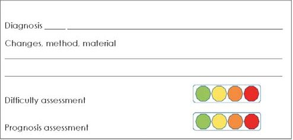
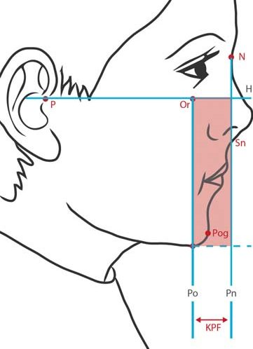
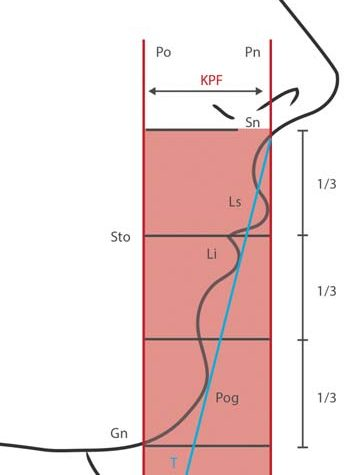
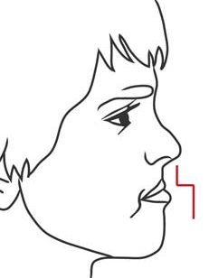
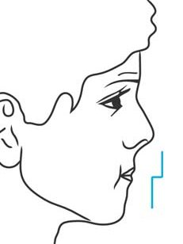
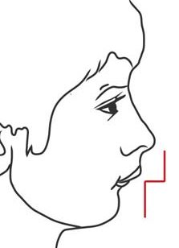
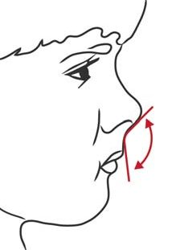
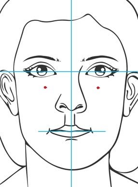
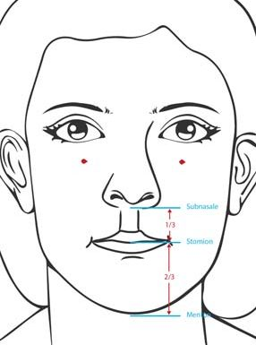
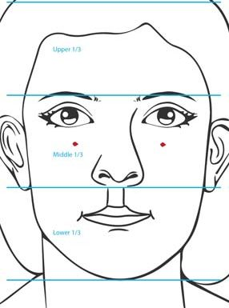
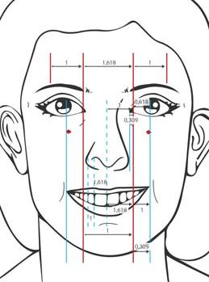
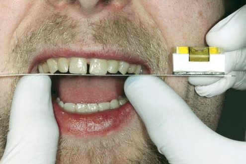
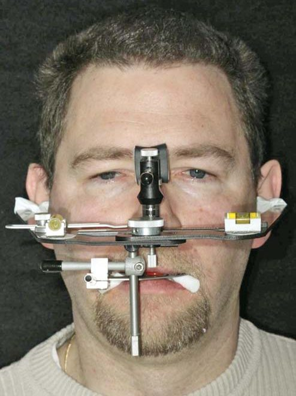
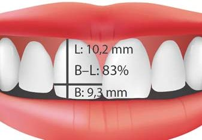
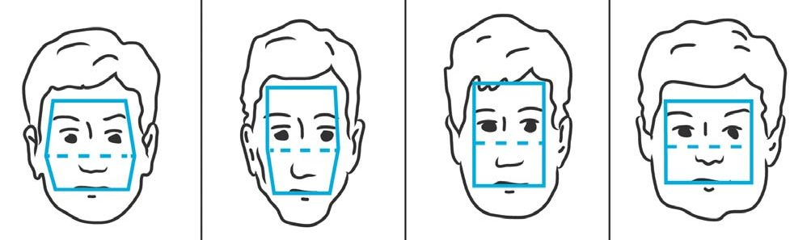
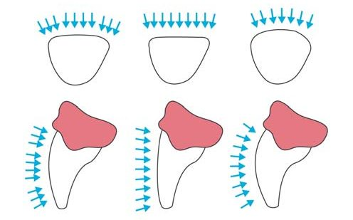
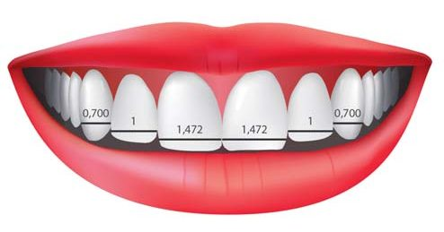
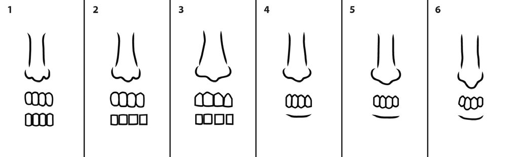
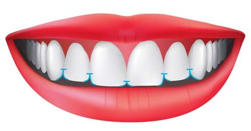
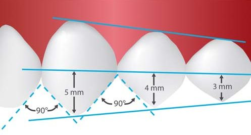
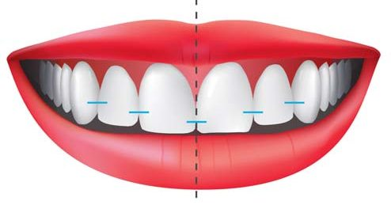
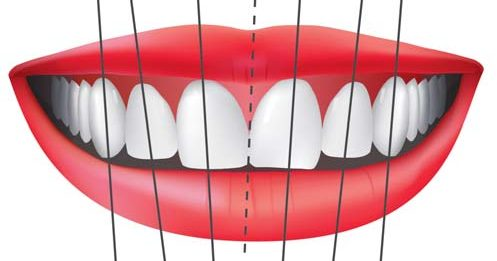
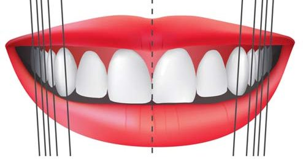
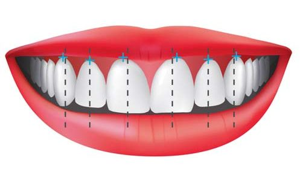
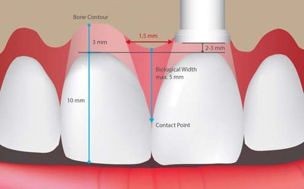
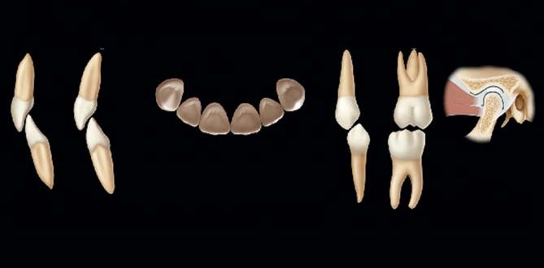
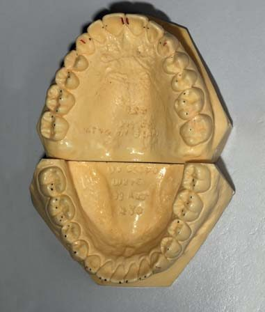
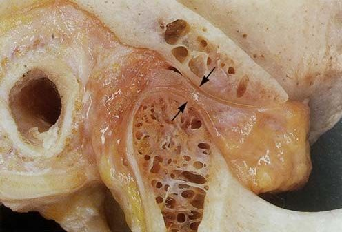
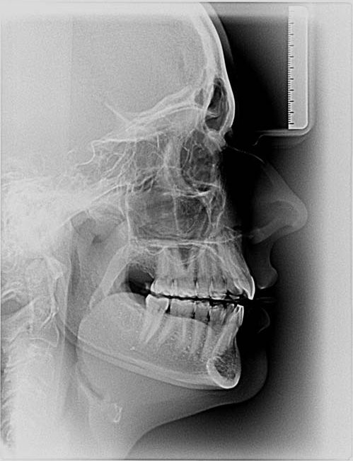
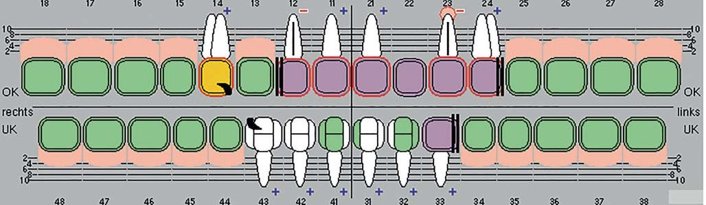
Функція
Принцип біоестетики: «Форма — це все» (д-р Боб Лі)
Ширина дуг. Оцінюється ширина верхньої і нижньої зубних дуг, їх звуження, розширення, порівняння розмірів дуг і обличчя, наявність щічних коридорів і нахил осей зубів.
Передня напрямна. Перекриття. Правильне перекриття і напрямна у передній ділянці є основоположними факторами довговічності всіх тканин, що беруть участь у функціонуванні стоматогнатичної системи. Функціональний аналіз встановлених моделей повинен містити таку інформацію:
ЦС (від шийки до шийки): ____ мм; ЦО (від шийки до шийки): ____ мм
довжина зубів: зуб 11, 21: ____ мм; зуб 31, 41: ____ мм
вертикальне перекриття: ____ мм; горизонтальне перекриття: ____ мм
передня напрямна: передня ____; права опора ____; ліва опора ____
серединна лінія: при ЦО ____; при ЦС ____
перший контакт: ____; балансуючі контакти: ____
При фізіологічній функції, зокрема при жуванні і відкушуванні, зуби не повинні стикатися. Єдиний контакт має виникати при ковтанні, що в підсумку триває лише кілька хвилин на день. Нижня щелепа рухається ззовні усередину, по шляху, визначеному сенсомоторикою, «огинаюча функція».
Рух висунення щелепи у напрямку вперед контролюється чотирма центральними різцями. Верхні латеральні різці коротші, ніж центральні, щоб створити місце для нижніх ікол і їх вхідного шляху. Рух, що виводить щелепу праворуч або ліворуч, спрямовується виключно іклами. Усі інші зуби повинні мати значні проміжки і навіть не торкатися при навантаженні. Ми повинні намагатися створити проміжок 1,5-2 мм на робочому боці, 3 мм — на балансуючому боці і 3 мм — при змиканні центральних різців край до краю. Створення великих проміжків небажане, бо це може дозволити язикові рухатися між зубами і створювати ортодонтичні сили пересування.
Форма. Метою будь-якої реконструкції має бути відновлення оригінальної генетичної форми зубів. Об'єктивні результати повинні записуватися в таку форму:
- Атриція — з'являється через тертя зубів один об оден.
- Абразія — з'являється від впливу абразивних субстанцій, що містяться в їжі або зубних пастах.
- Абфракція — відколи частинок зубів від частого і надмірного впливу сили.
- Ерозія — з'являється внаслідок впливу кислот, що містяться в їжі, і залежить від характеру харчування.
- Карієс — причиною є бактеріальна плівка.
А також комбінації цих патогенетичних процесів. З віком усі відмінності від оригінальної генетичної форми людини повинні бути якомога меншими. Основне правило: обсяг стирання зубів не повинен перевищувати 1 мм на 100 років. Локалізація і обсяг стирання зубів говорять нам про причини етіологічні і патогенетичні (вплив кислот, обмеження функції, дисфункція, парафункція…), а також варіанти лікування.
Оклюзія в бокових ділянках зубного ряду. Повна або центральна оклюзія (ЦО) може бути досягнута при русі нижньої щелепи в її розслабленому стані з мінімальною м'язовою силою і без будь-якого зісковзування від передчасних контактів до повного змикання. Усі зуби стикаються одночасно. Ідеальне положення та розподіл контактних пунктів має такий вигляд:
- при переміщенні контакту вершини горбика в ямку він буде блокований, що неприпустимо;
- краще розмістити контактні точки на гребенях горбиків, злегка переміщаючи їх до дистального скату;
- подбавши про створення просторів між поверхнями зубів-антагоністів, можна уникнути оклюзійних порушень, що дозволить пацієнту почуватися легко і комфортно.
М'язи і скронево-нижньощелепний суглоб: 3D-позиціонування нижньої щелепи. У цьому розділі аналізується тривимірне положення нижньої щелепи, яке визначене в основному м'язовим тиском. У реконструктивній стоматології існують два терміни: центральна оклюзія (ЦО) і центральне співвідношення (ЦС).
При центральній оклюзії залишаємо повну оклюзію (максимальний міжгорбиковий контакт) так як є і намагаємося уникнути виникнення суперконтактів при реконструкції. У цих випадках щелепи залишаються у найбільш звичному природному положенні — у цьому і полягає основна відмінність ЦО від ЦС. При центральному співвідношенні (ЦС) ми намагаємося визначити абсолютно нове положення нижньої щелепи, в якому і буде проведена реконструкція. У таких випадках при завершеній реконструкції ЦО відповідає ЦС. Орієнтуючись на пропорції обличчя, функціональні результати і втрату структур зубів, приймаємо рішення між двома цими положеннями нижньої щелепи.
Існує кілька визначень того, який вигляд може мати ЦС для суглобів. Одні стверджують, що при положенні головки в її верхньому передньому усередненому положенні виникає фізіологічне взаємовідношення головки з диском і всі тканини, які беруть у цьому участь, несуть фізіологічне навантаження. Окесон / Okeson вважає, що це «ортопедично стабільне становище». Ф. Спіар / F. Spear стверджує, що це правильно розташований диск, розслаблені латеральні крилоподібні м'язи та скорочені м'язи, що піднімають нижню щелепу. Р. Славічек / R. Slavicek описує це як крайнє положення спокою. Дж. Коїс / J. Kois вважає це положення артефактом при центральному положенні, А. Гутовский / A. Gutowski, згадуючи П. К. Томаса / P. K. Thomas і гнатологію, — фізіологічно зумовленою позицією.
Ці визначення лише частково анатомічні і більшою мірою мають наукове значення. Як клініцисти, ми шукаємо положення нижньої щелепи, яке буде стабільним (з негайно зробленими записами визначень), безболісним, з вільними рухами і можливістю функціонального навантаження протягом усього часу.
Також оцінка тривимірного положення нижньої щелепи включає і визначення її вертикальної позиції, або точніше — кутів її положення при відкриванні та закриванні в ЦО, або інакше — ВДО (вертикальна дистанція оклюзії). Існує кілька методів визначення справжнього статусу вертикальної дистанції оклюзії і необхідності її зміни.
Перший метод заснований на клінічних результатах. Аналіз фото робиться, як описано вище, оцінюється вплив ВДО на пропорції, красу і м'язову напругу обличчя.
Оцінка стертості. Оцінюється ступінь стертості оклюзійних поверхонь. Стертість натуральних бічних зубів може призводити до зниження вертикального розміру, причиною чого зазвичай є бруксизм. Як відомо, дефекти альвеолярного гребеня під протезами і стертість оклюзійної поверхні можуть бути причиною зниження висоти. У деяких випадках, незважаючи на стертість передніх зубів у більшому обсязі, ніж бокових, можна очікувати невелику втрату висоти. Причиною більш вираженої стертості передніх зубів може бути дисфункція або обмеження функції.
Фонетичні тести. При вимові звукосполучення «емм–ааа» і подальшій затримці на звуці «ааа» нижня щелепа переміщується в задню контактну позицію. Виходячи з цього, можна визначити вільну дистанцію до першого контакту зубів. При вимові звуку на кшталт «ашш» і затримці на звуці «шш» нижня щелепа переміщується на максимально близьку відстань до верхньої без змикання зубів. При вивченні профілю після фотографій в ЦО і ЦС необхідно також зробити знімок, вимовляючи звуки «емм–ааа».
Вимірювання і моделювання перекриття. Дистанція між емалево-цементним з'єднанням верхніх і нижніх різців, як правило, має становити близько 18 мм. Також до уваги слід брати зубоальвеолярне подовження, стертість зубів і зміну положення емалево-цементного з'єднання при пришийкових ураженнях. Щоб розробити план лікування для створення ідеальної форми зубів, адекватної вертикальної дистанції оклюзії і перекриття, потрібно провести воскове моделювання верхніх і нижніх різців. При необхідності його можна провадити в різних вертикальних позиціях. За допомогою воскового моделювання можна виготовити попередні моделі (мокап) накладки або капи в різних вертикальних дистанціях оклюзії, після чого перевірити їх у роті і зробити серію фото анфас і в профіль у різних вертикальних розмірах оклюзії. Аналізуючи обличчя, як описано вище, можна визначити ідеальну вертикальну дистанцію оклюзії (ВДО).
Другий метод заснований на різних більш-менш комп'ютеризованих дослідженнях (наприклад, Р. Славічек), цефалометричному аналізі та рентгенограмах, які превалюють в ортодонтичних і мультидисциплінарних випадках. Аналіз складних випадків зажадає інтеграції всіх цих критеріїв. Зазвичай пацієнти добре витримують зміну ВДО, зокрема її збільшення.
Структура
Тверді тканини
У стоматологічній документації слід зберігати інформацію про відсутні і наявні зуби, перевірку чутливості, тип, стан і обсяг існуючих реконструкцій. Також слід документувати локалізацію і тип патологічних процесів, таких як каріозні ураження, ерозії, стертість, абразія та абфракція для аналізу інформації про причини можливих майбутніх руйнувань і, тим більше, планування та прогнозування реконструкцій. Обсяг і локалізація тканин зуба, що залишилися, є основоположними для прийняття рішень, особливо в зубах з великими реставраціями і в ендодонтично лікованих зубах. Достовірний діагноз у більшості випадків можна встановити лише після втручання.
- Чи можна забезпечити достатній ферул — близько 2 мм — навколо зуба, чи достатня товщина стінки цервікального дентину і чи не занадто вона конічна?
- Чи буде достатньо біологічної товщини рівня кістки? Якщо ні, чи можливе хірургічне подовження коронки або її ортодонтичне висунення?
- Чи буде адекватним використання штифта?
- Чи має зуб стратегічну важливість?
- Яке навантаження припадатиме на нього?
Для оцінки стану підлеглих кісткових структур необхідна якісна рентгенологічна діагностика, у деяких випадках може знадобитися магніторезонансна візуалізація.
Методики заміщення
Аналіз залишених тканин зубів та побажання пацієнта змушують приймати рішення, як же компенсувати втрату тканин зубів. Найбільш консервативними є пряма реставрація, непрямі реставрації різних розмірів, виготовлені лабораторним шляхом, заміщення зубів з використанням імплантації, часткових або повних знімних протезів та/або, звичайно ж, комбінації різних методів.
Коли доходить до заміщення ясенної або альвеолярної тканини, аналіз контуру ясен дозволяє визначити обсяг і локалізацію тканин ясен, які необхідно перемістити. Існує вибір між ремоделюючою та аугментуючою пародонтальною хірургією, ортодонтичними переміщеннями (інтрузія, екструзія, горизонтальне переміщення), техніками вбиття кореня, аугментацією і установкою імплантатів. Якщо шансів встановити натуральні тканини у правильну позицію немає, потрібно планувати заміщення за допомогою кераміки і акрилу. Основні питання, що виникають при заміщенні зуба імплантатом: вік пацієнта, вимоги в естетичній зоні, куріння, періодонтити, морфологія і якість тканин.
Матеріали для реконструкції
Прийняття рішень у стоматології не спрощується зі збільшенням вибору матеріалів і вибором традиційних аналогових і нових цифрових методик. Знову ж таки, в залежності від суб'єктивних результатів необхідно визначити матеріали, доступні в клініці для конкретного випадку. Побудова схеми може виявитися дуже корисною при прийнятті рішень і для інформування пацієнтів.
Вартість
Фінансові межі, встановлені пацієнтом, будуть впливати на метод реконструкції і матеріал, який ми можемо порадити.
Біологія
Ендо. При визначенні необхідності ендодонтичного лікування можуть допомогти рекомендації Європейського товариства ендодонтії. Також важливі структурні аспекти (див. «Тверді тканини»).
Періо. Рішення про збереження натуральних зубів залежить від контролю інфекції. На прогноз і аналіз величезний вплив роблять періо-історія, кількість пародонтальних тканин, їх морфологічні проблеми, скарги пацієнта і, більше того, очікуване функціональне навантаження і стратегічна важливість.
Системні порушення. Особливістю групи пацієнтів старшого віку є вплив їхніх системних захворювань на реконструктивні методи, що можуть бути застосовані в кожному окремому випадку.
Біоестетична реконструкція: етапи і методи
У повсякденній стоматологічній практиці вибір правильного рішення залежить від усіх запланованих методів обстеження і аналізу. Рішення про специфічне лікування є результатом взаємодії кількох складових: наукового обґрунтування, досвіду лікаря та концепції стоматологічної допомоги, побажань, скарг пацієнта і прямих протипоказань. Комплексні випадки вимагають глибших знань і аналізу, тому ця стаття може продемонструвати послідовність лікування лише схематично.
Аналіз ґрунтується на фото- і відеодокументації, рентгенологічному і клінічних дослідженнях (фото 1, 2). Положення верхньої щелепи фіксується в естетичній площині оклюзії, сагітальна вісь естетичної площини зафіксована горизонтально при положенні пацієнта сидячи або стоячи рівно, з поглядом, спрямованим горизонтально.
Модель нижньої щелепи гіпсується у центральному співвідношенні, що дозволяє провести аналіз правильно (фото 3). Оскільки реєстрація центрального співвідношення має багато цілей і є відправною точкою для більшості дорогих реконструкцій, вона має провадитися з максимальною обережністю і перевіреними методами. Такі ж вимоги ставляться до всіх технічних етапів, таких як зняття відбитків, відливання моделей, їх установка в артикулятор і т. д.
Ця реєстрація центрального співвідношення має значення лише для попереднього діагнозу, положення нижньої щелепи, можливо, буде змінюватися в процесі лікування. Аналіз моделей повинен відповідати певним правилам, про які йшлося вище. Завершення процедури СОАП дає нам можливість скласти попередній план лікування.
Визначення центрального співвідношення
У випадку з перевизначенням центрального співвідношення та пошуком нового положення нижньої щелепи лікування починається із роз'єднання за допомогою передньої накусувальної пластинки на різцях верхньої щелепи (MAGO). Ця пластинка депрограмує існуючі рухи нижньої щелепи, стабілізує суглобові головки, репрограмує традиційні для пацієнта звички жування, керуючись пропріоцептивною чутливістю, репозиціонує нижню щелепу у терапевтичне положення. Також з її допомогою можна первинно візуалізувати естетику передніх зубів (фото 4).
Як тільки зникає необхідність вносити зміни в накусувальну пластинку (пацієнт не відчуває болю, нижня щелепа вільно рухається і всі функції в нормі протягом певного часу), потрібно довести, що нижня щелепа і суглоби перебувають у стабільній позиції. Для цього провадиться процедура стабільного позиціонування суглобових головок. Реєструється близько п'яти положень центрального співвідношення, і нижня щелепа встановлюється в кожному з них. Якщо всі положення збігаються, то ми отримуємо істотний доказ нормального функціонування і стабільної позиції нижньої щелепи (фото 5).
Визначення вертикального розміру оклюзії
Після цього робиться остаточне гіпсування набору моделей: верхня встановлюється в естетичній площині оклюзії, нижня — у стабільному положенні суглобових головок. На цих моделях, керуючись даними, отриманими при біоестетичному аналізі, провадиться воскове моделювання передніх зубів в їх ідеальному положенні. Для клінічної перевірки воскового моделювання виконується мокап безпосередньо в ротовій порожнині з фотореєстрацією і знову робиться біоестетичний аналіз.
Визначення остаточного вертикального розміру оклюзії ґрунтується на біоестетичному аналізі і може потребувати кількох попередніх мокапів і шин в різних вертикальних позиціях, клінічних тестів, фотознімків і повторного аналізу. Цифровий дизайн усмішки не дає можливості одночасної симуляції сенсомоторних змін (фото 6, 7).
Остаточне і повне воскове моделювання вимагає моделей, зафіксованих у функціональній площині оклюзії, слідуючи положенню шарнірної осі, але тільки після доказу стабільності суглобових головок. Вісь визначається динамічно, кривизна і кути рухів суглобів програмуються в артикуляторі. Саме це має на увазі повне воскове моделювання ідеальної морфології зубів, перекриття та оклюзії в ідеальному положенні нижньої щелепи (фото 8).
Лише після всіх цих заходів можна остаточно визначити метод відновлення і обрати матеріал для реконструкції. З цього моменту перенесення воскового моделювання в остаточну реконструкцію виконується досить легко.
Щоб створити простір для реконструкції в достатньому і потрібному обсязі та запобігти надмірному препаруванню і безглуздій втраті здорових тканин зубів, використовуються шаблони для препарування, виготовлені на основі воскового моделювання (фото 9). Існують різні техніки, і в кожному випадку потрібен специфічний підхід. Завжди корисно використовувати шаблони і робити препарування безпосередньо на моделях. Це допомагає зберегти натуральні тканини зубів, уточнити межі з урахуванням вимог матеріалів для відновлення і форму ретенції. Необхідно записати всі зроблені зміни натуральних зубів, зробити фото і скласти протокол, який можна буде використовувати на етапі клінічного препарування (фото 10). Можна препарувати мокап на моделі за методикою Галіпа Гюреля.
Також за допомогою воскового моделювання виготовляються шаблони для тимчасових конструкцій, і таким чином морфологія переноситься з тимчасових конструкцій з точністю 1:1. Шаблони для тимчасових конструкцій повинні мати чітку опору на не препарованих зубах, що залишилися, або вже виготовлених тимчасових реставраціях. На фото 11 набір ключів, виготовлених на моделі, для перевірки точності виготовлення і фіксації тимчасових конструкцій. Тепер усе готове для препарування.
Залежно від стану та побажань пацієнта, препарування можна розподілити на кілька етапів або проводити підготовку однієї щелепи на день (фото 12, 13). У разі поділу препарування тимчасові конструкції виготовляються, як попередні, використовуючи MAGO. Зверніть увагу на те, що перш ніж продовжити препарування і прибрати всі опори або не препаровані зуби, слід виготовити тимчасові конструкції клінічним шляхом з використанням шаблону з воскового моделювання, одну за одною.
Необхідно точно перевіряти оклюзійні співвідношення на тимчасових конструкціях, починаючи з тонкої корекції передніх зубів, а потім бічних, лише після досягнення правильних оклюзійних співвідношень, як на восковому моделюванні (фото 14). Подбайте про використання просторово-стабільного міцного акрилового матеріалу. Варто мати досвідченого техніка чи асистента.
На цьому етапі депрограмуються шкідливі жувальні звички, репрограмується різцеве ведення, досягається стабільне положення суглобових головок (що означає стабільність центрального співвідношення нижньої щелепи), і в цьому центральному співвідношенні створюється генетична морфологія зубів, переднє ведення і центральна оклюзія на тимчасових конструкціях, виготовлених клінічним шляхом.
Після двох і більше днів препарування може виникнути спазм м'язів і набряк у суглобах. Необхідно перевіряти оклюзію після кожного дня. Найліпший варіант — використання реєстрації співвідношення при відкритому прикусі, використання лицьової дуги і установка моделей з тимчасовими конструкціями. Також слід робити біоестетичний аналіз отриманого результату.
Далі йдуть відтиски відпрепарованих зубів. Верхню модель з відпрепарованими зубами буде встановлено за допомогою лицьової дуги. Нижня модель після препарування встановлюється за допомогою реєстраторів центрального співвідношення. Ця реєстрація (фото 15) виконана за допомогою шаблону для нижніх різців, у тій самій висоті, що й воскове моделювання та тимчасові конструкції; у застосуванні якої-небудь сили на бічних зубах не було потреби. Тепер черга техніка перенести дані воскового моделювання в остаточну реставрацію, незалежно від матеріалу і техніки, обраної лікарем, буде це аналогова, цифрова чи комбінована техніка.
Далі можна робити примірку кераміки без глазурі, починаючи з передніх зубів і провадячи корекцію кожної одиниці, якщо це необхідно. В ідеальному випадку корекції не потрібні. В іншому випадку можуть знадобитися повторні відтиски і установка моделей.
Після успішної примірки йде остаточна фіксація керамічних реставрацій. Необхідно послідовно перевіряти оклюзійні співвідношення і робити послідовну фіксацію, при цьому на верхніх іклах слід залишити тимчасові коронки або зафіксувати керамічну реставрацію на тимчасовий цемент. Після закінчення лікування провадиться СОАП і наступне тривале спостереження (фото 16-18: до і після).
Переклад Романа Савости
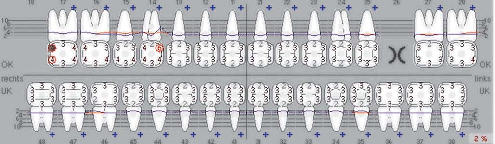
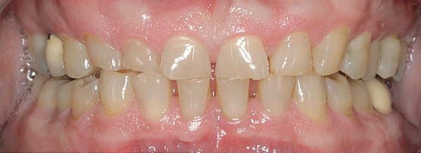
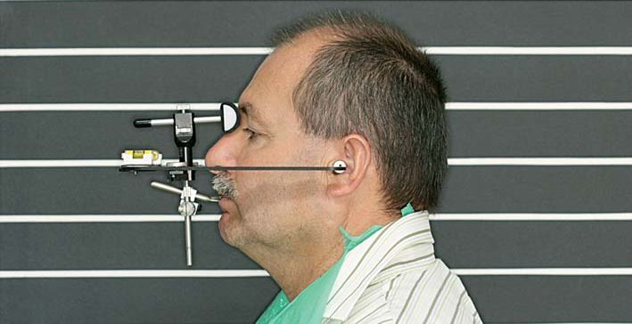
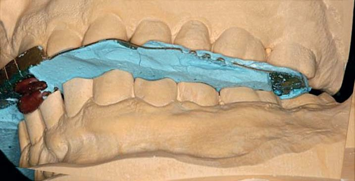
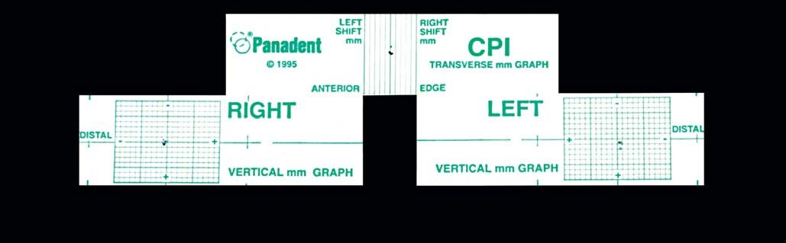
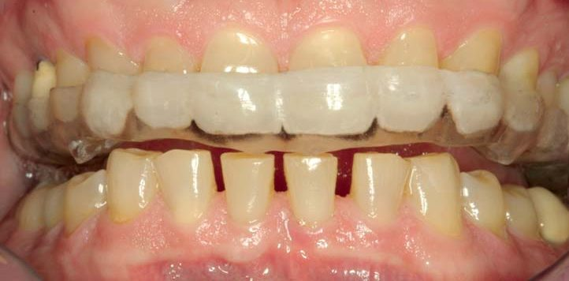
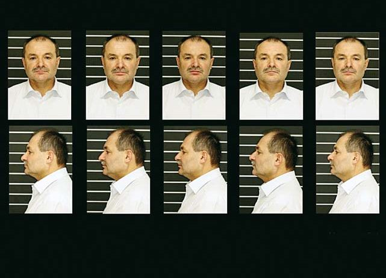
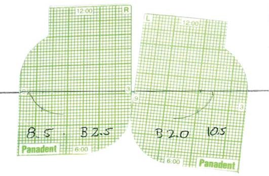
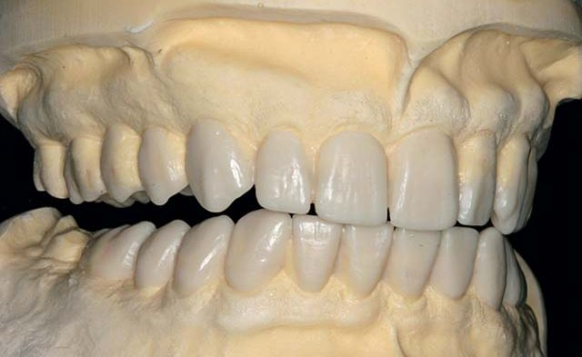
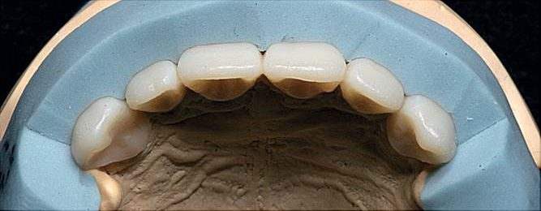
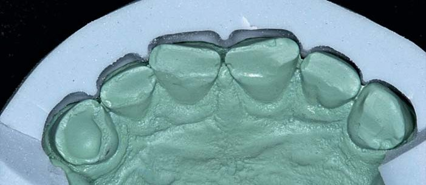
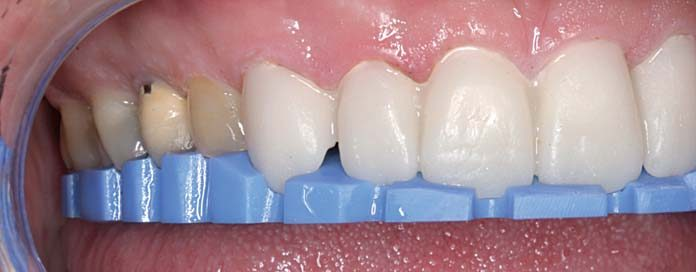
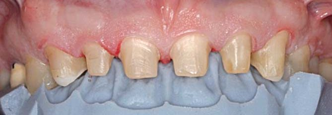
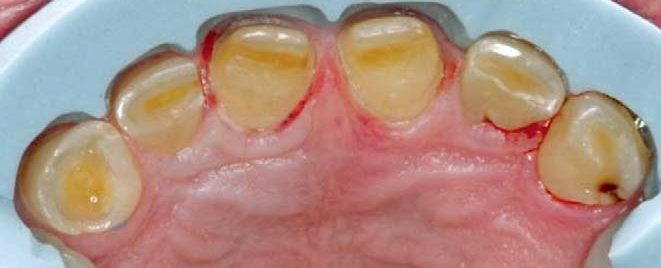
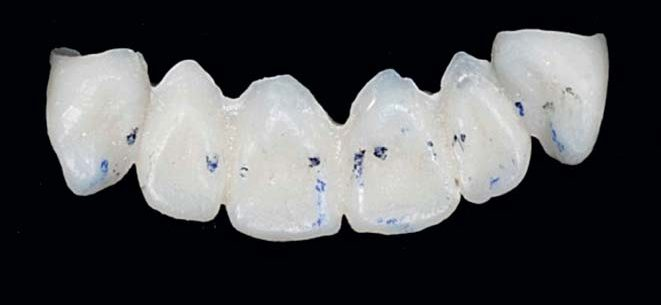
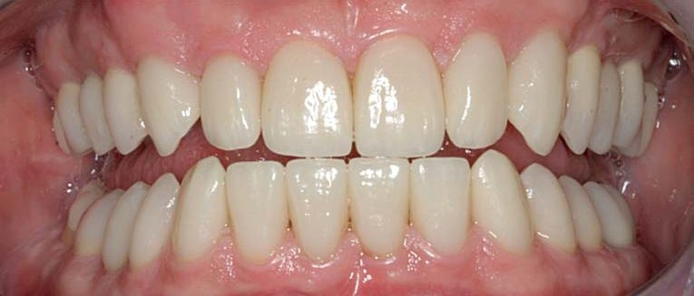
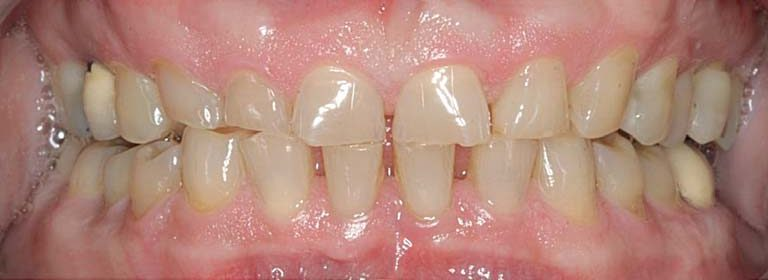
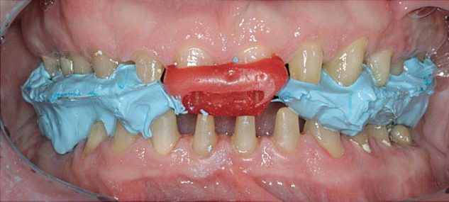
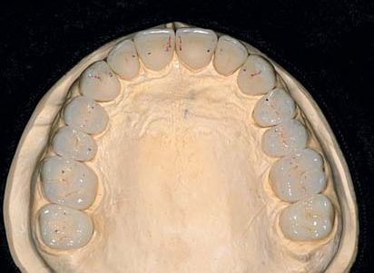
Література
- Kerr A. J., Chan R., Fields H. W., et al. Esthetics and smile characteristics from the layperson's perspective: a computer-based survey study. J Am Dent Assoc. 2008; 139: 1318–1327.
- Bidra A. S. Three-dimensional esthetic analysis in treatment planning for implant-supported fixed prosthesis in the edentulous maxilla: review of the esthetics literature. J Esthet Restor Dent. 2011 Aug; 23(4): 219–236.
- Bruxismus — gesicherte und potenzielle Risikofaktoren, eine systematische Literaturübersicht. Schweiz Monatsschr Zahnmed. 2008; 118(2).
- Chu S. J., Tan J. H., Stappert C. F., Tarnow D. P. Gingival zenith positions and levels of the maxillary anterior dentition. J Esthet Restor Dent. 2009; 21(2): 113–120.
- Chu S. J., Tarnow D. P., Tan J. H., Stappert C. F. Papilla proportions in the maxillary anterior dentition. Int J Periodontics Restorative Dent. 2009 Aug; 29(4): 385–393.
- Coachman C. Digital Smile Design. www.digitalsmiledesign.com.
- Cohen M., ed. Interdisciplinary Treatment Planning, vol. I and II. Quintessence Books.
- Duarte S. Jr., Schnider P., Lorezon A. P. The importance of width/length ratios of maxillary anterior permanent teeth in esthetic rehabilitation. Eur J Esthet Dent. 2008 Autumn; 3(3): 224–234.
- Fradeani M. Ästhetische Analyse. Quintessenz; 2005. Gürel G. The Science and Art of Porcelain Laminate Veneers. Quintessenz; 2003.
- Hochman M. N., Chu S. J., Tarnow D. P. Maxillary anterior papilla display during smiling: a clinical study of the interdental smile line. Int J Periodontics Restorative Dent. 2012 Aug; 32(4): 375–383.
- Horvath S. D., Wegstein P. G., Lüthi M., Blatz M. B. The correlation between anterior tooth form and gender — a 3D analysis in humans. Eur J Esthet Dent. 2012 Autumn; 7(3): 334–343.
- Kan J. Y., Rungcharassaeng K., Umezu K., Kois J. C. Dimensions of peri-implant mucosa: an evaluation of maxillary anterior single implants in humans. J Periodontol. 2003 Apr; 74(4): 557–562.
- Kois J. C. New challenges in treatment planning, part 1. J Cosmetic Dent. 2011 Winter; 26(4).
- Kokich V. O. Jr., Kiyak H. A., Shapiro P. A. Comparing the perception of dentists and lay people to altered dental esthetics. J Esthet Dent. 1999; 11(6): 311–324.
- Lee R. L. Esthetics and its relationship to function. In: Rufenacht C. R. Fundamentals of Esthetics. Chicago: Quintessence; 1990: 137–209.
- Levine R. A., Huynh-Ba G., Cochran D. L. Soft tissue augmentation procedures for mucogingival defects in esthetic sites: review. Int J Oral Maxillofac Implants. 2014.
- Lickteig R., Lotze M., Kordass B. Successful therapy for temporomandibular pain alters anterior insula and cerebellar representations of occlusion. Cephalalgia. 2013 Nov; 33(15): 1248–1257.
- Magne P., Gallucci G. O., Belser U. C. Anatomic crown width/length ratios of unworn and worn maxillary teeth in white subjects. J Prosthet Dent. 2003 May; 89(5): 453–461.
- Passia N., Blatz M., Strub J. R. Is the smile line a valid parameter for esthetic evaluation? A systematic literature review. Eur J Esthet Dent. 2011 Autumn; 6(3): 314–327.
- Rufenacht C. R. Ästhetik in der Zahnheilkunde. Quintessenz; 1990.
- Rakosi Th., Jonas I. Kieferorthopädie Diagnostik. Thieme; 1989.
- Salama H., Salama M. A., Garber D., Adar P. The interproximal height of bone: a guidepost to predictable aesthetic strategies and soft tissue contours in anterior tooth replacement. Pract Periodontics Aesthet Dent. 1998 Nov-Dec; 10(9): 1131–1141.
- Sclar A. G. Weichgewebe und Ästhetik in der Implantologie. Quintessenz; 2004.
- Spear F. Facially Generated Treatment Planning (FGTP). Curriculum Handout.
- Slavicek R. Das Kauorgan. Gamma Dental Edition.
- Gamma Dental. Diagnostik und Software; diagnostische Auswertung anhand des Fernröntgenseitenbildes.
- Stuck J. Seminar: Gesichts-, Sprach-, Modell- und Zahnersatzanalyse für die patientengerechte Planung von Zahnersatz.